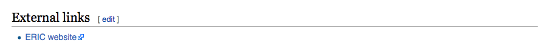
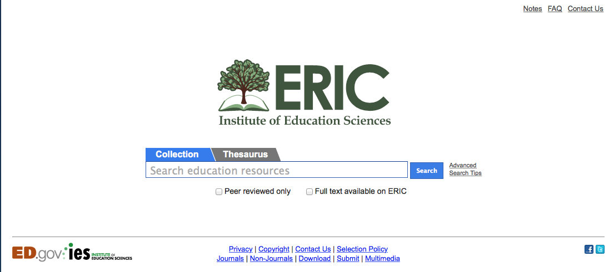
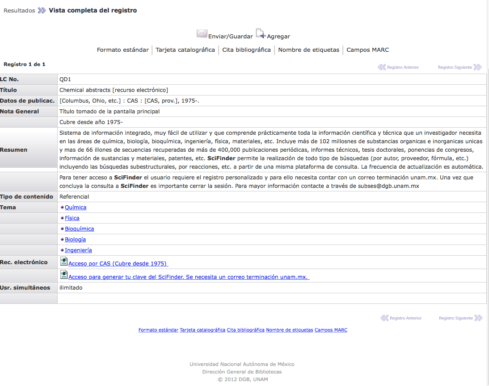
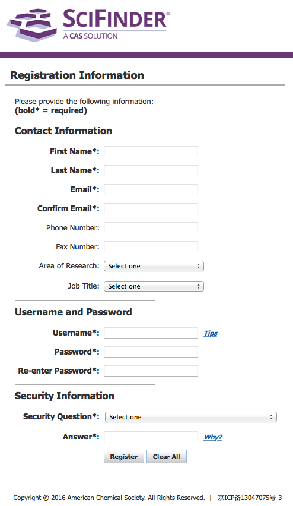
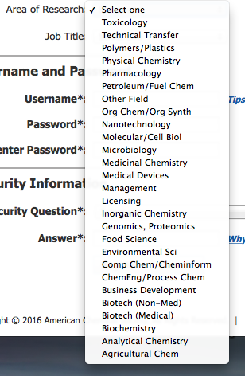
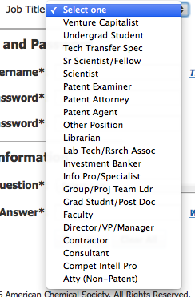
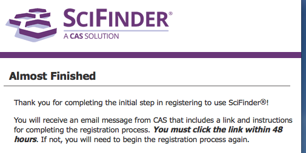

Recorrido A
Actividades
- Conocer la base de datos de tu elección a partir de un listado.
- ¿Qué bases de datos te parece que podrían ser más útiles para resolver tus necesidades de información? Elige 2 o 3, escribe sus nombres y las disciplinas con que se relacionan.
- Da click en el vínculo de cada una, éste te llevará al artículo de Wikipedia que se relaciona con esa base de datos. Por ejemplo, si seleccionaste ERIC (Educational Resource Information Center) y das click sobre ese nombre, te llevará al artículo que aparece en una pantalla como la que sigue:
- Identificar sus componentes principales y el tipo de información que contiene.
- ¿Cómo se puede acceder a esta base de datos para realizar búsquedas de información?
- ¿Es posible acceder desde el Catálogo de la DGB?
- ¿Qué criterios se usaron para organizar los documentos?
- Identificar los métodos de búsqueda idóneos para este sitio.
- ¿Qué herramientas y operadores funcionan aquí para recuperar documentos sobre un tema específico?
- Además de los documentos, ¿hay algún otro tipo de información accesible en esta base de datos?
- Elaborar un mapa que describa a grandes rasgos esta base de datos.
En la actualidad, hay cientos de bases de datos relacionadas con la búsqueda de información en las Ciencias Suaves, por ello es importante conocer al menos algunas para poder decidir cuál de ellas contiene la mejor información para los temas de nuestro interés.
Lo que haremos ahora es recorrer con la vista un listado de las principales bases de datos, según las reporta Wikipedia. Encontrarás que allí aparecen bases de datos relacionadas con todas las ramas del saber. Da click en el vínculo y realiza la actividad 6.1
Listado de bases de datos
Actividad 6.2 Desde tu Google drive, abre un documento y titúlalo APELLIDO.S6.A.
Contesta las siguientes preguntas:
Desliza la página hasta el final y ubica la liga hacia el sitio de la base de datos que seleccionaste. Por ejemplo, en la parte inferior del artículo sobre ERIC, aparece la liga hacia el sitio.
Al dar click en la liga, entrarás al sitio de la base de datos que elegiste. Según nuestro ejemplo, la pantalla de entrada es la que sigue.
Ahora vamos a familiarizarnos con las bases que elegiste, una por una.
Actividad 6.3 En el mismo Google doc, contesta las preguntas:
Actividad 6.4 En el mismo documento, contesta las preguntas:
Actividad 6.5 Para concluir esta sesión y conservar una descripción de los rasgos principales la base de datos utilizada por ejemplo ERIC, elabora un mapa mental o un cuadro sinóptico donde incluyas la url, los medios de acceso, los criterios de organización, las herramientas para acceso y el tipo de información que allí se almacena. Comparte el Google doc en el foro y con las ponentes de este Taller.
Recorrido B
Actividades
- Conocer la base de datos SciFinder.
- Ingresa a la DGB por medio de tu cuenta de acceso remoto.
- Ve a la sección de Catálogos.
- Da click en 'Bases de datos'.
- Escribe en la ventana 'scifinder' y da click.
- Elige tu nombre de usuario
- Tu contraseña debe tener estas características: 7-15 caracteres, NO parecerse a tu nombre de usuario, NO parecerse a la contraseña de tu correo, debe incluir letras mayúsculas y minúsculas, números, al menos un carácter no-alfanumérico (@, #, %, *).
- Selecciona una pregunta de seguridad y da la respuesta.
- Al terminar el llenado del formulario, da click en 'Register'.
- ¿Qué es SciFinder?
- ¿A partir de qué fecha son los documentos que almacena?
- ¿Qué áreas de la ciencia cubre?
- ¿Qué tipo de búsquedas puedes realizar?
- Identificar sus componentes principales y el tipo de información que contiene.
- A partir de tu nueva cuenta de SciFinder (solo en el caso de que ya cuentes con el correo de confirmación de tu cuenta). En este caso, regresa a la página de la DGB que vimos al inicio de esta sesión. Da click en la liga 'Acceso por CAS (cubre desde 1975)'
- A partir del navegador de tu preferencia (sugerimos usar Google). En este caso, cierra tu sesión en la DGB. Abre otra pestaña del navegador y escribe 'Scifinder' en la ventana. O bien, puedes dar click en la siguiente liga: SciFinder
- ¿Cómo se puede acceder a SciFinder para realizar búsquedas de información?
- ¿Qué criterios se usaron para organizar los documentos?
- ¿Qué herramientas y operadores funcionan aquí para recuperar documentos sobre un tema específico?
- ¿Qué otro tipo de información está accesible en SciFinder?
- ¿A qué tipo de usuarios puede serle de gran utilidad?
- Identificar los métodos de búsqueda idóneos para este sitio.
- Elaborar un mapa que describa a grandes rasgos esta base de datos.
Al igual que SCOPUS, los estudiantes y docentes UNAM podemos ingresar a SciFinder a través de la DGB; los beneficios son los mismos. La diferencia con SCOPUS es que tenemos la opción de registrarnos como usuarios UNAM en SciFinder, esto te permitirá acceder y bajar una mayor cantidad de textos gratuitamente. ¡Así que inciaremos nuestro registro! Ten a la mano los datos de tu correo electrónico .unam.mx
Encontrarás una ventana como la que sigue:
Da click en la liga 'Acceso para generar tu clave del SciFinder. Se necesita un correo terminación .unam.mx' Se abrirá una ventana de acceso como la que aparece abajo.
Completa los campos con la información requerida.
NO olvides registrarte con tu cuenta de correo .unam.mx
 En la casilla 'Area of research' selecciona la que más te interesa. Esto permitirá que recibas alertas sobre publicaciones nuevas acerca de ese tema pero NO limita tus búsquedas en la base.
En la casilla 'Job title', si eres profesor(a) selecciona el perfil que mejor se acomode a tu situación, puede ser: 'Other position', 'Specialist', 'Grad Student', o algún otro. Si eres alumno de bachillerato o licenciatura selecciona 'Undergrad Student'.
Si todo está bien, se abrirá una ventana como la que sigue:
El mensaje de SciFinder puede tardar algunas horas, así que vamos a continuar con algunas actividades.
Actividad 6.1 Abre un Google doc desde tu drive. Titúlalo APELLIDO.S6.B
Contesta las siguientes preguntas:
(Encontrarás la información en la página de la DGB donde nos quedamos antes de iniciar el registro a SciFinder.)
Actividad 6.2 Hay 2 formas de realizar esta actividad:
Así entrarás al sitio como un usuario no inscrito a la UNAM.
En el mismo Google.doc, contesta las preguntas:
Actividad 6.3
Para familiarizarte mejor con SciFinder, mira este video: SCIFINDER
También puedes descargar el Manual para el usuario y guardarlo en tu Gdrive para futuras referencias: SCIFINDER OVERVIEW
Para concluir esta sesión y conservar una descripción de los rasgos principales de SciFinder, elabora un mapa mental o un cuadro sinóptico donde incluyas la url, los medios de acceso, los criterios de organización, las herramientas para acceso y el tipo de información que allí se almacena.
Comparte el Google doc en el foro y con las ponentes de este Taller.
NO OLVIDES REVISAR TU CUENTA DE CORREO TERMINACIÓN .enp.unam.mx Y CONFIRMAR TU REGISTRO EN SCIFINDER.